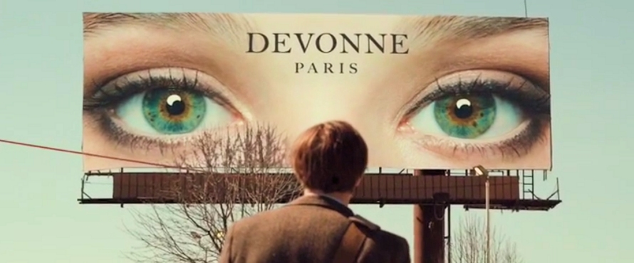
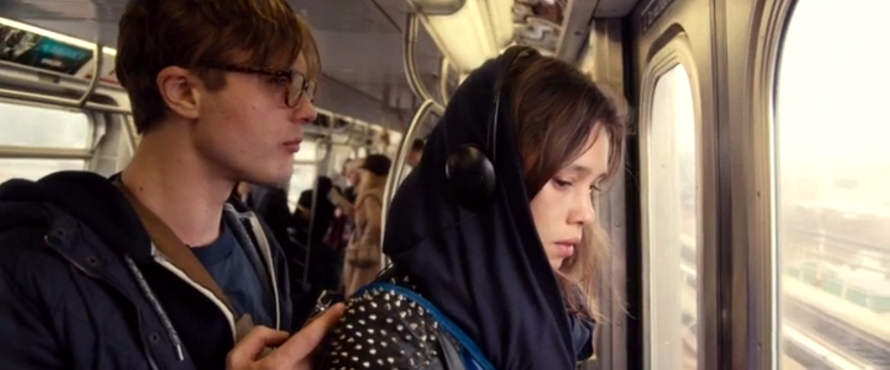

Could it be that the eyes of an individual are the window to this person’s soul? At least that is what is suggested by the writers of the science fiction drama film ‘I Origins’ (‘Eye’ Origins – gedit ?).
The film was written, directed, and produced by Mike Cahill who isn’t new to the independent film production, having previously directed another low-budget science fiction drama film Another Earth, that was a big success at the 2011 Sundance Film Festival and additionally won a handful of Awards at other film festivals.
I Origins tells the story of a graduate student, Ian (Michael Pitt), who with his colleagues Kenny (Steven Yeun) and Karen (Brit Marling) researches the evolution of eyes.
One day, at a Halloween party, Ian meets an intriguing girl, Sofi (Astrid Berges-Frisbey), and photographs her eyes (explaining her that “it’s just something I do”). There is an instant chemistry between the two, but after a fleeting romance Sofi suddenly leaves the party without any explanation. Ian continues with his research, but cannot forget about Sofi. He has however no means of finding her again, as she left him with no telephone number or other contact information.
Then, by a lucky coincidence, Ian happens upon an advertisement billboard featuring Sofi's unmistakable eyes, and uses it to track her down through the Internet. The two meet, start to date and before long Ian moves in with Sofi. Despite Ian being very rational and Sofi rather spiritual, their relationship quickly develops to a stage when they decide to marry. On their would-be wedding day (the registrar informs them that there is a 24-hour waiting period after the application is filed before the license can be picked up and the actual marriage can take place) Karen calls Ian, informing him that she has observed a particular species of earthworm, Eisenia Fetida that, although blind, has the PAX6 gene necessary for the development of eyes. This is the major breakthrough Ian, Kenny and Karen have been waiting for and working towards all that time.
Ian rushes to the laboratory to see Karen’s discovery with his own eyes and takes Sofi along. When Sofi, who is religious, finds out that Ian conducts his research in order to disprove creationists (by proving that eyes have evolved rather than have been created by some supreme being), she becomes upset, likening humans to these blind worms. Just because the worms cannot see light, it doesn't mean that light doesn't exist. Similarly, just because humans cannot see God, it does not follow that God doesn't exist.
Later that day, when they are returning from Ian’s work back to their place, the lift they are taking breaks down and Sofi dies in a freak accident. Ian is inconsolable, but he continues with his work. Gradually, he becomes close to Karen, with whom he is in daily contact at their workplace, until one day when he breaks down and she is comforting him, a more intimate relationship develops between the two.
Seven years later, Ian is a respected scientist in his field, now living with Karen who just gave birth to their first child. The hospital takes a routine scan of the baby’s iris, that, when entered into the database, appears to match with another person's eyes. Initially, this is dismissed as a glitch in the new computer system.
A few months later, when the baby undergoes an experimental test for autism, it starts crying after seeing a photograph of a particular person. Ian suspects that there is more to the test than they are told and, after doing some background checks on Dr. Simmons who suggested the test, he finds out that the scientist is doing research in the field of reincarnation. Intrigued, Ian travels to Idaho, where he finds that the person whose eyes match their baby's had died two years earlier, just before their baby has been conceived.
Ian’s former research partner, Kenny, the creator of the iris database, helps Ian and Karen run some iris photos of deceased people through the database to see if there are any matches. To their astonishment, the results indicate that Sofi's eyes match those of a young girl in India.
Encouraged by understanding and supportive Karen, Ian travels to India to find the girl. He soon finds the facility that did the iris scans, but learns that the girl is an orphan and will be very hard to find. Almost having given up hope, in a last-ditch attempt to find the girl, Ian places an advert on a billboard with a photo of Sofi's eyes and the offer of a reward to anybody who knows the girl with the matching pair of eyes.
Some time later, Ian finds a little girl staring at the billboard, with her eyes matching Sofi's down to the last detail and imperfection. He takes the girl, whose name is Salomina, back to his hotel room and contacts Karen over Skype. With her help, Ian conducts a simple test on the girl, presenting her with a series of pictures depicting assorted objects and people related to Sofi, as well as some control images not connected to her in any way. Although Salomina initially picks mostly the pictures associated with Sofi, she becomes progressively more and more hesitant, with the final results inconclusive.

Ian feels foolish travelling all the way to India indulging in false hope. But just as he prepares to leave the hotel with the girl, she panics and starts crying when faced with taking a lift down to the lobby. Ian embraces crying Salomina and remembers Sofi’s words, when they once discussed their mortality: “Don’t worry, we will find each other again”.
TRIVIA: Brit Marling, who played Ian’s assistant Karen in the movie, appeared as Rhoda in Another Earth - another science fiction film by Mike Cahill, and his directorial debut.